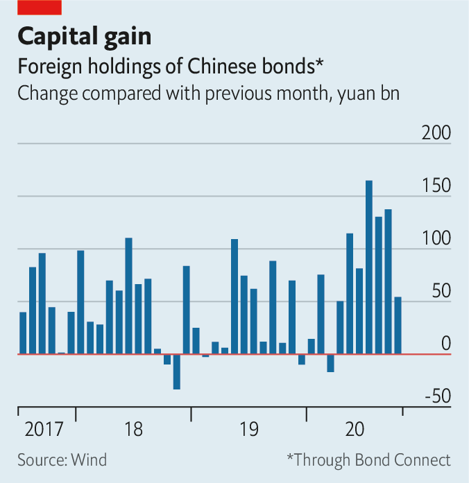
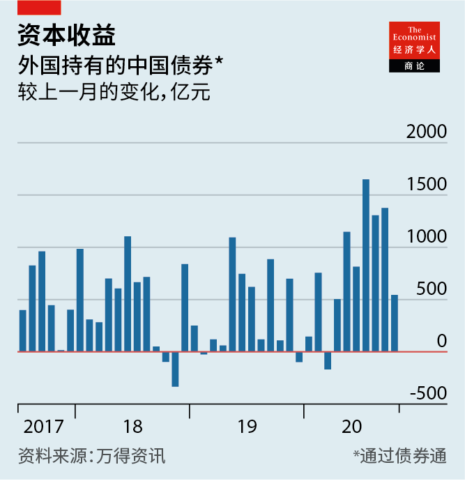

2020-12-02T15:27:43+00:00
China’s bond market
中国的债券市场
中國的債券市場
No guarantees
无担保
無擔保
Investors are jolted by the default of a highly rated state-owned firm
一家高评级国有企业违约，令投资者震惊
一家高評級國有企業違約，令投資者震驚
CHINA’S CREDIT-RATING agencies do not disguise their love for the state. Yongcheng Coal and Electricity’s state pedigree was at the top of a list of merits in a recent credit appraisal by CCXI, one such agency, which expressed its confidence in the group on October 10th with a top-notch AAA rating on a 1bn-yuan ($152m) bond.
中国的信用评级机构毫不掩饰自己对政府的爱。在近期一次信用评估中，评级机构中信诚国际将永城煤电的国有背景列在其各种优点的首位。该机构于10月10日对永城煤电一只10亿元的债券予以最高的AAA评级，表达了对该集团的信心。
中國的信用評級機構毫不掩飾自己對政府的愛。在近期一次信用評估中，評級機構中信誠國際將永城煤電的國有背景列在其各種優點的首位。該機構於10月10日對永城煤電一隻10億元的債券予以最高的AAA評級，表達了對該集團的信心。
Yongcheng’s default a month later on a different 1bn-yuan bond has sent a shockwave through China’s $14trn bond market. The company paid overdue interest three days later, but not before investors dumped state-backed debt with links to Henan province, the region in central China where it is based. The jarring news that a state group with a recent AAA-rating had defaulted halted at least 20bn-yuan-worth of planned debt issuance over the following week, as yields on state debt surged.
一个月后，永城另一只10亿元债券违约，在中国14万亿美元的债券市场中掀起轩然大波。三天后该公司支付了逾期利息，但在此之前，投资者已经抛售了与永城总部所在省份河南有关联的政府支持债券。一家近期获评AAA级的国有集团竟然违约，刺耳消息导致国债收益率飙升，随后一周价值至少200亿元的债券发行计划暂停。
一個月後，永城另一隻10億元債券違約，在中國14萬億美元的債券市場中掀起軒然大波。三天後該公司支付了逾期利息，但在此之前，投資者已經拋售了與永城總部所在省份河南有關聯的政府支持債券。一家近期獲評AAA級的國有集團竟然違約，刺耳消息導致國債收益率飆升，隨後一周價值至少200億元的債券發行計劃暫停。
The concern was so great that a large state-owned company in neighbouring Shanxi province was forced to issue a rare statement to investors on November 14th pledging that the companies it controls would not default. “The particular thing about this case was that it was completely unexpected,” said Charles Chang of S&P, another rating agency.
人们忧心忡忡，邻省山西的一家大型国企不得不罕见地在11月14日向投资者发表声明，承诺其控股的公司不会违约。另一家评级机构标准普尔的查尔斯·张（音译）表示：“这起事件特别的地方是它完全出人意料。”
人們憂心忡忡，鄰省山西的一家大型國企不得不罕見地在11月14日向投資者發表聲明，承諾其控股的公司不會違約。另一家評級機構標準普爾的查爾斯·張（音譯）表示：“這起事件特別的地方是它完全出人意料。”
Investor panic has focused on Yongcheng, but there are signs of wider tumult. Huachen Automotive, a carmaker owned by a provincial northern government, said on November 16th that it had sought restructuring after defaulting on a bond in October. Tsinghua Unigroup, a technology firm controlled by Tsinghua University, failed to repay a 1.3bn-yuan bond on the same day. The companies had enjoyed AAA and AA ratings, respectively.
投资者的恐慌集中在永城，但有迹象显示会出现更大范围的骚动。北方某省政府所有的汽车制造商华晨汽车11月16日表示，公司在10月份一只债券违约后已寻求重组。同一天，清华大学控股的科技公司紫光集团未能偿还13亿元的债券。这两家公司先前分别获得了AAA和AA评级。
投資者的恐慌集中在永城，但有跡象顯示會出現更大範圍的騷動。北方某省政府所有的汽車製造商華晨汽車11月16日表示，公司在10月份一隻債券違約後已尋求重組。同一天，清華大學控股的科技公司紫光集團未能償還13億元的債券。這兩家公司先前分別獲得了AAA和AA評級。
That state firms can default is no surprise. Yongcheng is one of ten to have done so this year. Regulators have realised they can no longer afford to bail out inefficient, loss-making companies. A small but steady stream of weak state firms have been allowed to default since 2015, part of a government plan to impose discipline on the market. Defaults also make it possible to price in risk better, something foreign investors have struggled to do. As defaults have risen over the past three years, foreign investors have ploughed record sums into China’s bond market.
国有企业有可能违约这件事并不奇怪。永城是今年以来违约的十家国企之一。监管机构已经意识到自己再也负担不起搭救效率低下的亏损企业了。作为强化市场纪律计划的一部分，自2015年以来，政府已少量但持续地允许经营不善的国企违约。违约也让更好地为风险定价成为可能，这对外国投资者来说一直是个难题。过去三年违约数量上升之时，外国投资者向中国债券市场投入的资金也创下纪录。
國有企業有可能違約這件事並不奇怪。永城是今年以來違約的十家國企之一。監管機構已經意識到自己再也負擔不起搭救效率低下的虧損企業了。作為強化市場紀律計劃的一部分，自2015年以來，政府已少量但持續地允許經營不善的國企違約。違約也讓更好地為風險定價成為可能，這對外國投資者來說一直是個難題。過去三年違約數量上升之時，外國投資者向中國債券市場投入的資金也創下紀錄。
But Yongcheng’s default has alarmed investors because it throws out the old rule-book that helped determine which groups would receive state support and which would be allowed to go bust. Parent companies have been the strongest guiding light to date. Yongcheng’s parent, for example, is one of Henan’s largest state-owned groups and is wholly owned by the province’s asset administrator, making Yongcheng state royalty in the region. Huachen Automotive is owned by a similar entity. Such proximity to powerful asset administrators used to give investors confidence that the state would swoop to the rescue at the first sign of distress. Not any more.
但永城的违约引起了投资者的警觉，因为现在看来，那套帮助判断哪些集团会获得政府支持、哪些会被允许破产的老经验不再有效了。一直以来，母公司是哪家是最有力的指引。例如，永城的母公司是河南最大的国有集团之一，由河南省国资委完全控股，因此永城在河南是“皇族”。华晨汽车也由一家类似的实体拥有。像这样靠近权力强大的资产监管部门这一点曾让投资者相信，政府会在危机显现的第一时间出手相救。再也不是这样了。
但永城的違約引起了投資者的警覺，因為現在看來，那套幫助判斷哪些集團會獲得政府支持、哪些會被允許破產的老經驗不再有效了。一直以來，母公司是哪家是最有力的指引。例如，永城的母公司是河南最大的國有集團之一，由河南省國資委完全控股，因此永城在河南是“皇族”。華晨汽車也由一家類似的實體擁有。像這樣靠近權力強大的資產監管部門這一點曾讓投資者相信，政府會在危機顯現的第一時間出手相救。再也不是這樣了。
Scale also used to be important. Large state groups have been valuable to cities and provinces because they give secure employment to tens of thousands of people. Huachen Automotive alone has more than 40,000 employees. Restructuring them would threaten jobs and social stability, but these are risks the government appears increasingly willing to take. “Parent company, size—these are the reasons people argue you should buy,” says Edmund Goh of Aberdeen Standard Investments, an asset manager. “This is starting to change, and people are going to be reading more of the details.”
规模曾经也很重要。大型国有集团对城市和省份来说很宝贵，因为它们为成千上万的人提供了稳定的就业机会。仅华晨汽车就有四万多名员工。重组它们会威胁就业和社会稳定，但政府似乎越来越愿意承担这些风险。“母公司、规模——人们主张该买进的时候总爱搬出这些理由，”资产管理公司安本标准投资管理（Aberdeen Standard Investments）的埃德蒙·吴（音译）说，“这种情况已开始改变，人们会去揣摩更多的细节。”
規模曾經也很重要。大型國有集團對城市和省份來說很寶貴，因為它們為成千上萬的人提供了穩定的就業機會。僅華晨汽車就有四萬多名員工。重組它們會威脅就業和社會穩定，但政府似乎越來越願意承擔這些風險。“母公司、規模——人們主張該買進的時候總愛搬出這些理由，”資產管理公司安本標準投資管理（Aberdeen Standard Investments）的埃德蒙·吳（音譯）說，“這種情況已開始改變，人們會去揣摩更多的細節。”
Investors and rating agencies will have to study state firms’ fundamentals, instead of relying on perceived government backing. S&P expects more defaults among large state groups that were once considered untouchable. Zhu Ning, a professor at the Shanghai Advanced Institute of Finance, said that regulators may even launch “a crackdown on the rating agencies for better-informed ratings”. The shift will prove awkward for local agencies, such as CCXI, which are under pressure from state groups to hand out as many sparkling AAA ratings as possible. ■
投资者和评级机构将不得不去研究国企的基本面，而不是靠感知到的政府对它们的支持。标准普尔预计，还会有更多曾经被认为动不得的大型国有集团违约。上海高级金融学院的教授朱宁表示，监管机构甚至可能会“整顿评级机构，以获得更全面可靠的评级”。这种转变将会让中诚信国际这样的本土评级机构感到为难，因为它们受到来自国企的压力，要尽可能多地给出闪闪发亮的AAA评级。
投資者和評級機構將不得不去研究國企的基本面，而不是靠感知到的政府對它們的支持。標準普爾預計，還會有更多曾經被認為動不得的大型國有集團違約。上海高級金融學院的教授朱寧表示，監管機構甚至可能會“整頓評級機構，以獲得更全面可靠的評級”。這種轉變將會讓中誠信國際這樣的本土評級機構感到為難，因為它們受到來自國企的壓力，要儘可能多地給出閃閃發亮的AAA評級。